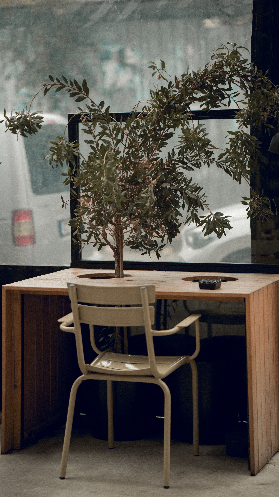
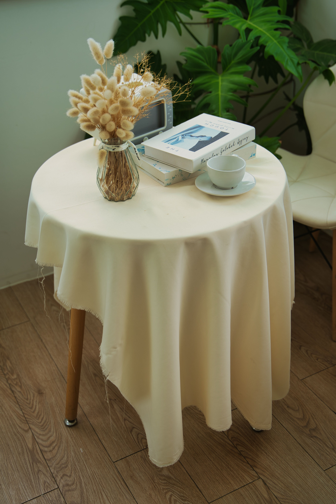

En este artículo
Observa el espacio disponible
Antes de comprar cualquier mueble, observa las dimensiones de la esquina y cómo afecta a las zonas de circulación. Una solución que ocupa demasiado espacio puede terminar dificultando el uso habitual de la habitación.
También conviene comprobar la entrada de luz, la presencia de enchufes y la proximidad de puertas o ventanas.
Analiza las dimensiones antes de intervenir
No todas las esquinas tienen las mismas posibilidades. Algunas cuentan con suficiente profundidad para colocar un mueble, mientras que otras son estrechas y funcionan mejor con soluciones ligeras. Antes de comprar nada, mide la anchura, la profundidad y la altura disponible, y comprueba si existen enchufes, radiadores, ventanas o puertas que condicionen la distribución.
También conviene observar la circulación. Una esquina situada junto a una puerta no debería convertirse en un obstáculo. En cambio, una zona poco transitada puede admitir una pieza algo más voluminosa. Pensar en el recorrido diario evita que una solución aparentemente práctica termine dificultando el uso de la habitación.
La iluminación es otro factor importante. Una esquina con buena luz natural puede ser apropiada para leer o trabajar, mientras que una zona más oscura puede reservarse para almacenamiento o complementarse con una lámpara.
Piensa en la función antes que en la decoración
Una esquina vacía puede resultar tentadora para colocar cualquier objeto, pero es mejor decidir primero qué necesita la habitación. Si falta almacenamiento, esa zona puede resolver parte del problema. Si ya existe suficiente capacidad, quizá sea preferible mantenerla ligera para no sobrecargar el ambiente.
La escala debe estudiarse junto con los muebles cercanos. Una esquina situada al lado de un sofá puede admitir una lámpara o una mesa pequeña, mientras que una esquina junto a un armario puede necesitar una solución más estrecha. Las proporciones adecuadas hacen que el resultado parezca integrado desde el principio.
Crea almacenamiento
Algunas esquinas pueden utilizarse para almacenar objetos que necesitas tener cerca pero que no quieres dejar sobre mesas o superficies.

Utiliza soluciones proporcionales
Estanterías estrechas, pequeños muebles verticales o cestas pueden aprovechar la altura sin ocupar demasiado espacio en el suelo.
Convierte las esquinas en almacenamiento útil
Las estanterías de esquina permiten aprovechar dos paredes al mismo tiempo y pueden utilizarse tanto para libros como para cajas, plantas y objetos decorativos. En habitaciones pequeñas, los módulos verticales suelen ofrecer una buena relación entre capacidad y superficie ocupada.
En cocinas y baños también existen soluciones específicas para esquinas. Un mueble con baldas giratorias, cajones adaptados o estantes abiertos puede facilitar el acceso a zonas que normalmente quedarían desaprovechadas. Antes de instalar una solución, comprueba que las puertas y cajones puedan abrirse sin interferir con otros elementos.
El almacenamiento abierto funciona mejor cuando se mantiene organizado. Si la esquina se convierte en un lugar para acumular objetos sin criterio, la sensación de orden desaparece. Utiliza cajas, cestas o agrupaciones visuales para mantener una apariencia limpia.
Facilita el acceso a lo que guardas
Un almacenamiento que es difícil de alcanzar termina perdiendo utilidad. Antes de instalar baldas profundas o muebles altos, piensa en qué objetos se guardarán allí y con qué frecuencia los necesitarás. Las cosas de uso diario deben quedar accesibles, mientras que las de temporada pueden ocupar zonas menos cómodas.
Las cajas y cestas pueden ayudar a mantener el interior ordenado, pero también deben tener un tamaño práctico. Si una cesta queda demasiado pesada o profunda, será incómoda de sacar. La organización debe facilitar la rutina, no crear una tarea adicional.
Convierte una esquina en una zona de uso
No todas las esquinas necesitan convertirse en almacenamiento. Algunas pueden funcionar como pequeños espacios destinados a actividades concretas.

- Un pequeño lugar para leer.
- Una zona para colocar una planta.
- Un espacio auxiliar para trabajar.
- Un rincón para sentarse y descansar.
Crea una zona pequeña para descansar o concentrarte
Una esquina tranquila puede convertirse en un rincón de lectura, una zona para escuchar música o un pequeño espacio de descanso. Un sillón compacto, una lámpara y una mesa auxiliar pueden ser suficientes. No es necesario llenar el lugar: la comodidad depende más de la proporción y de la función que de la cantidad de elementos.
Si la esquina se utiliza para trabajar, prioriza una superficie con profundidad suficiente, una silla adecuada y acceso sencillo a la electricidad. Las baldas superiores pueden servir para guardar material sin ocupar el suelo.
En dormitorios infantiles, una esquina también puede utilizarse para crear una zona de lectura o actividades. En estos casos, es importante mantener los elementos pesados bien fijados y dejar suficiente espacio para moverse con seguridad.
Cuida el ambiente del pequeño rincón
Una zona de descanso funciona mejor cuando está visualmente separada del ruido de otras actividades. Una lámpara cálida, una textura agradable o una pequeña planta pueden ayudar a crear esa sensación. No es necesario llenar la esquina de decoración: unos pocos elementos bien escogidos suelen ser suficientes.
Si el rincón se encuentra cerca de una ventana, considera la temperatura y la exposición solar. Un espacio agradable por la mañana puede resultar demasiado caluroso por la tarde. La comodidad debe evaluarse durante los momentos en que realmente se utilizará.
Utiliza la decoración con moderación
Una esquina vacía puede necesitar únicamente un elemento bien elegido. Añadir demasiados objetos puede producir el efecto contrario y hacer que el espacio parezca más pequeño.
Busca que el elemento elegido tenga alguna relación visual o funcional con el resto de la habitación.

Decora sin convertir la esquina en un punto de acumulación
Cuando una esquina no necesita una función específica, puede utilizarse como punto decorativo. Una planta de tamaño adecuado, una lámpara de pie, una obra de arte o una composición de cuadros pueden llenar visualmente el espacio sin saturarlo.
La escala es fundamental. Un objeto demasiado pequeño puede perderse en una esquina amplia, mientras que una pieza demasiado grande puede hacer que la habitación parezca más estrecha. Busca una relación equilibrada con los muebles cercanos y deja cierta separación respecto a las zonas de paso.
También puedes utilizar una esquina para introducir textura o color. Una butaca, una cesta de fibras o una pequeña composición de textiles pueden aportar personalidad sin necesidad de realizar cambios importantes en el resto de la habitación.
Usa la verticalidad para crear interés
Cuando una esquina no tiene suficiente suelo disponible, la composición puede desarrollarse hacia arriba. Una obra de arte, una planta alta o una lámpara de pie pueden atraer la mirada y llenar el espacio sin añadir demasiados objetos. Esta estrategia resulta especialmente útil en habitaciones pequeñas.
También puedes repetir algún detalle de la decoración principal, como un color o una textura. Así la esquina se integra en el conjunto y no parece un elemento colocado de manera improvisada. La continuidad visual es más efectiva que acumular adornos diferentes.
Consejos finales para mantener el resultado
Una vez que hayas decidido qué hacer con una esquina, observa el resultado durante algunos días antes de añadir más elementos. Si la zona funciona bien con una sola pieza, no existe ninguna necesidad de llenarla. En decoración, dejar espacio libre también puede ser una decisión consciente. Si la esquina se utiliza como almacenamiento, revisa de vez en cuando lo que contiene y procura que los objetos estén agrupados de manera lógica. Si funciona como zona de descanso o trabajo, comprueba que siga siendo cómoda después de incorporar los accesorios necesarios. Las esquinas también pueden ayudar a equilibrar una habitación. Una lámpara alta puede aportar verticalidad, mientras que una planta puede suavizar una composición de líneas rectas. El efecto dependerá de la escala y de la relación con los muebles cercanos. Por eso, conviene tomar decisiones de manera gradual. Empieza con la función principal, comprueba que no interfiera con la circulación y después añade únicamente los elementos que realmente mejoren el ambiente. Así se consigue aprovechar una zona difícil sin convertirla en un foco de desorden.
Detalles que mejoran la experiencia
También merece la pena valorar qué ocurre con la esquina cuando cambia la iluminación o la actividad de la habitación. Una zona que durante el día parece perfecta para trabajar puede necesitar una lámpara específica por la tarde. Si se utiliza como almacenamiento, comprueba que la apertura de puertas y cajones siga siendo cómoda cuando el resto de la habitación está ocupado. Estas pequeñas comprobaciones evitan que una solución pensada para ahorrar espacio termine creando una nueva dificultad. En hogares con niños o mascotas, la seguridad debe formar parte de la decisión: evita piezas inestables, objetos que puedan caer fácilmente y elementos que invadan las zonas de paso. Una esquina bien aprovechada debe ser útil sin convertirse en un punto de riesgo. Cuando el espacio es especialmente reducido, dejar la esquina libre también puede ser una buena elección. No todas las superficies necesitan una función adicional. A veces, mantener una zona despejada mejora la circulación y hace que el conjunto de la habitación parezca más ligero.
Preguntas frecuentes
¿Todas las esquinas deben tener una función práctica?
No. Algunas pueden funcionar simplemente como puntos decorativos o permanecer libres para mantener una sensación de amplitud. La mejor decisión depende de la circulación, el tamaño de la habitación y las necesidades reales de la vivienda.
¿Qué tipo de almacenamiento funciona mejor en una esquina?
Las estanterías verticales, módulos de esquina y soluciones adaptadas a la profundidad disponible suelen ser eficaces. Es importante comprobar que puertas y cajones puedan abrirse correctamente y que el almacenamiento sea accesible.
¿Cómo evitar que una esquina se convierta en un lugar de acumulación?
Define una función concreta y limita la cantidad de objetos. Si la esquina sirve para almacenar, agrupa las cosas por categorías; si es decorativa, selecciona pocas piezas y deja espacio libre alrededor.
Conclusión
Aprovechar las esquinas de la casa no significa llenar todos los espacios vacíos. El objetivo es identificar aquellos rincones que realmente pueden aportar comodidad, almacenamiento o personalidad.
Una solución sencilla y bien proporcionada suele funcionar mejor que una composición excesivamente cargada.
Las esquinas de una casa pueden aportar mucho más de lo que parece cuando se analizan desde una perspectiva funcional. Medir el espacio, respetar la circulación y elegir una función concreta permite convertir una zona olvidada en almacenamiento, descanso, trabajo o decoración. La mejor solución será siempre la que responda a una necesidad real y mantenga el equilibrio visual del ambiente. En espacios pequeños, incluso unos pocos centímetros bien aprovechados pueden mejorar considerablemente la organización cotidiana.